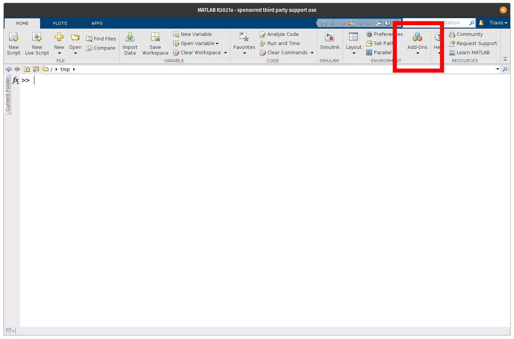
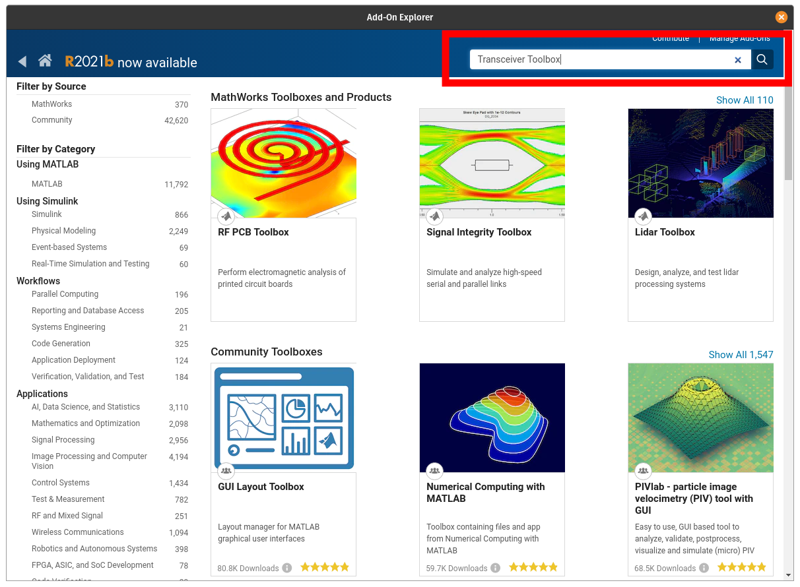
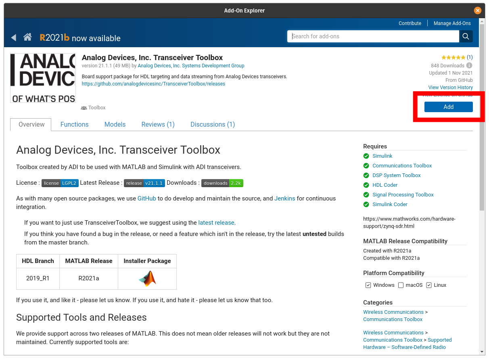

Installation
Dependencies
The toolbox has different dependencies based on the features required. These are broken down into the base dependencies for data stream and control, and HDL code generation.
The base dependencies for the toolbox requires libIIO and the libIIO MATLAB bindings. There are three options for this install with different required MathWorks Toolboxes:
Communications Toolbox Support Package for Xilinx Zynq-Based Radio
Communications Toolbox
Signal Processing Toolbox™
DSP System Toolbox™
Communications Toolbox Support Package for Analog Devices ADALM-Pluto Radio
Communications Toolbox
Signal Processing Toolbox™
DSP System Toolbox™
libIIO MATLAB Binding Standalone Installer (R2021b+)
Signal Processing Toolbox™
HDL Generation Support
To leverage HDL-Coder and the reference designs with the toolbox requires the following components:
Xilinx Vivado 2022.2
Xilinx Vitis 2022.2
Simulink
Connecting To Hardware
Transceiver Toolbox is designed and tested to work with ADI kernel drivers based in the IIO framework. The most common target platforms will utilize ADI’s Kuiper Linux distribution or other buildroot based systems authored by ADI. These images have the necessary IIO drivers and libIIO support built-in. Since drivers can evolve over time, it is recommended to always the supported Kuiper released defined on the Transceiver Toolbox Release Page.
To download and flash Kuiper images, refer to the Kuiper Linux Documentation.
It is possible to use Transceiver Toolbox with custom Linux images as long as the necessary IIO drivers and libIIO support is included.
Transceiver Toolbox Install
The Transceiver Toolbox itself can be installed either from:
MATLAB Versions
Before installing Transceiver Toolbox check the Release Page to check for the lasted supported of MATLAB. The latest version is the one which is available in Add-on Explorer, since Add-On Explorer does not currently support hosting multiple versions. If you have an older release of MATLAB, download the MLTBX installer from matching release on the Release Page.
Add-On Explorer Walkthrough
To install the toolbox from within MATLAB using the Add-On Explorer, first launch the Explorer from MATLAB’s Home tab:

Search for the toolbox:

Select Transceiver Toolbox from results:
Select add:
